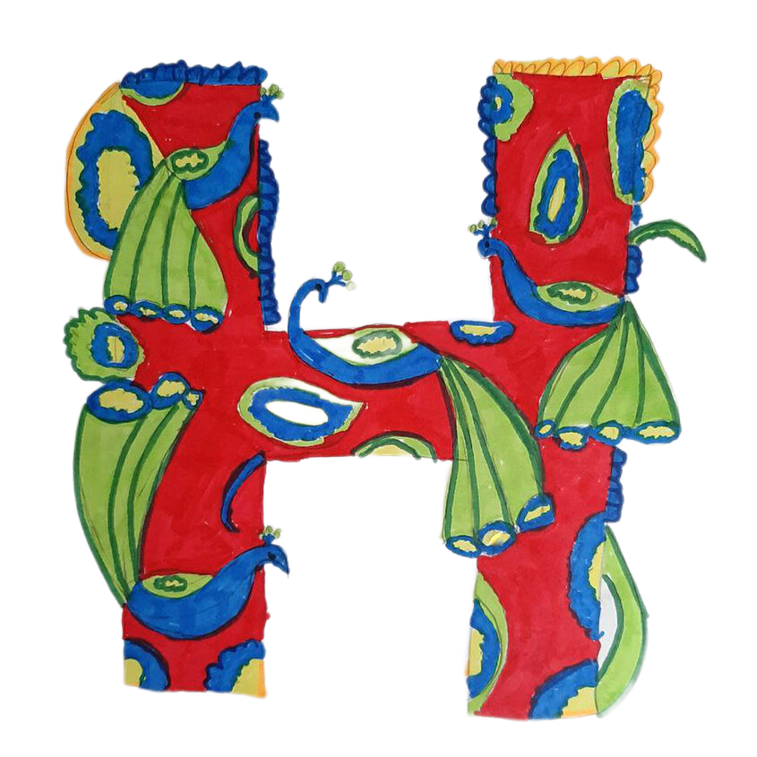
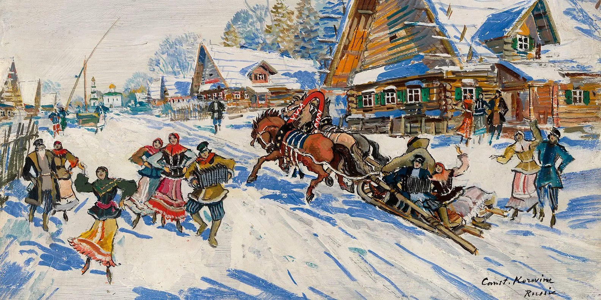

|  |
ОВЫЙ ГОД НА РУСИ |
Традиция праздновать наступление нового года насчитывает не одну тысячу лет. Новый год отмечали жители древней Месопотамии, Египта, Греции, Римской империи, Китая. Встречали его и восточно-славянские племена, составившие основу древнерусского государства. Однако разные народы праздновали его в разное время. В Египте началом отсчета нового года становился разлив Нила, который происходит в июле, в Греции — день летнего солнцестояния, а в Междуречье — день весеннего равноденствия. И только в Риме со II века до Р. Х. новый год впервые стали отмечать первого января. Позднее эта дата была окончательно закреплена в качестве начала нового года в 46 г. при Юлии Цезаре.
Наши предки праздновали наступление нового года в марте, как и многие другие народы, чья жизнь была тесно связана с природными циклами. В это время оживала природа, земля пробуждалась от зимней спячки, начинались полевые работы. Эта традиция просуществовала довольно долго, но с утверждением в стране христианства и централизации государства новый год стал отмечаться 1 сентября — в соответствии с церковным календарем.
Сохранились описания празднования нового года в России в XVI веке. В этот день в Москве на Красной площади устраивалось торжественное богослужение с участием царя, патриарха, знати, духовенства и народа. Люди испрашивали благословения на новый год и поздравляли друг друга с его наступлением.
